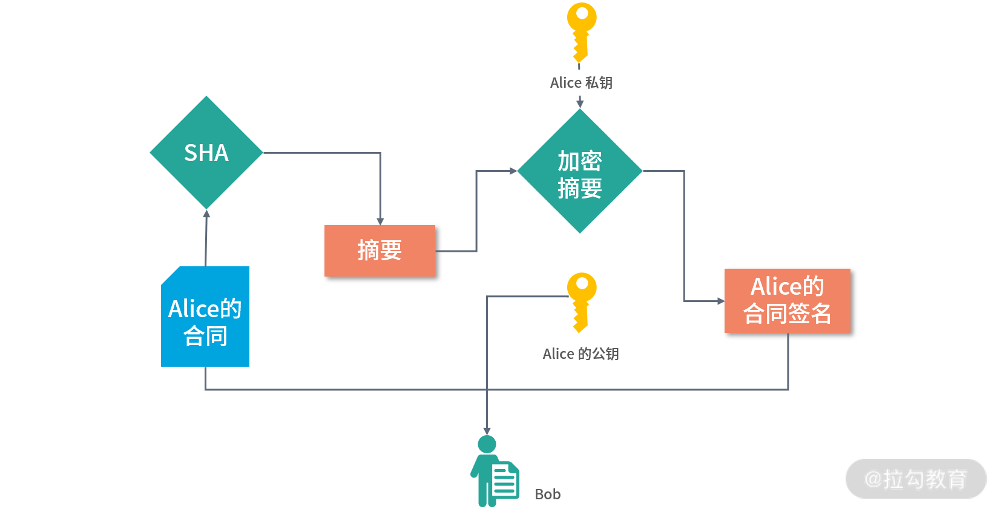
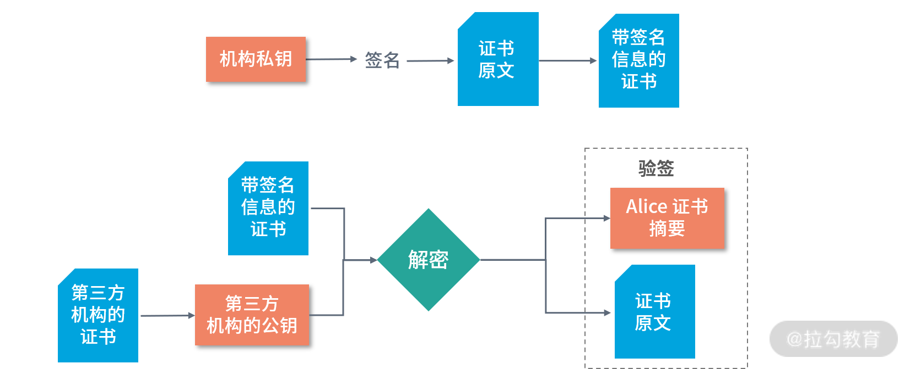
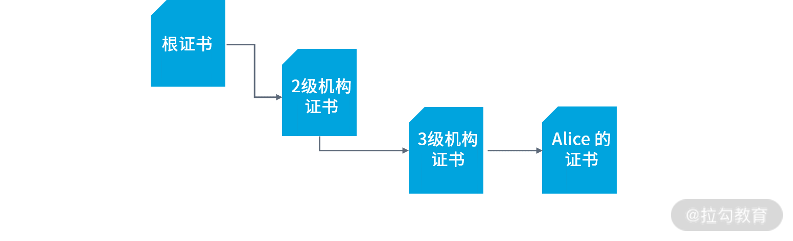
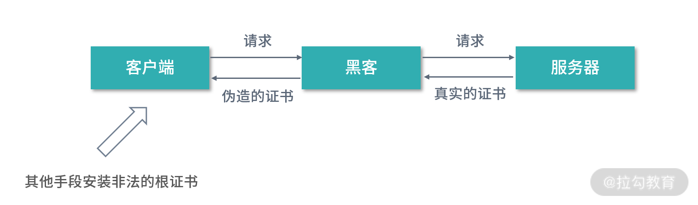

- 00 开篇词 为什么大厂面试必考操作系统？.md.html
- 00 课前必读 构建知识体系，可以这样做！.md.html
- 01 计算机是什么：“如何把程序写好”这个问题是可计算的吗？.md.html
- 02 程序的执行：相比 32 位，64 位的优势是什么？（上）.md.html
- 03 程序的执行：相比 32 位，64 位的优势是什么？（下）.md.html
- 04 构造复杂的程序：将一个递归函数转成非递归函数的通用方法.md.html
- 05 存储器分级：L1 Cache 比内存和 SSD 快多少倍？.md.html
- 05 (1) 加餐 练习题详解（一）.md.html
- 06 目录结构和文件管理指令：rm -rf 指令的作用是？.md.html
- 07 进程、重定向和管道指令：xargs 指令的作用是？.md.html
- 08 用户和权限管理指令： 请简述 Linux 权限划分的原则？.md.html
- 09 Linux 中的网络指令：如何查看一个域名有哪些 NS 记录？.md.html
- 10 软件的安装： 编译安装和包管理器安装有什么优势和劣势？.md.html
- 11 高级技巧之日志分析：利用 Linux 指令分析 Web 日志.md.html
- 12 高级技巧之集群部署：利用 Linux 指令同时在多台机器部署程序.md.html
- 12 (1)加餐 练习题详解（二）.md.html
- 13 操作系统内核：Linux 内核和 Windows 内核有什么区别？.md.html
- 14 用户态和内核态：用户态线程和内核态线程有什么区别？.md.html
- 15 中断和中断向量：Javajs 等语言为什么可以捕获到键盘输入？.md.html
- 16 WinMacUnixLinux 的区别和联系：为什么 Debian 漏洞排名第一还这么多人用？.md.html
- 16 (1)加餐 练习题详解（三）.md.html
- 17 进程和线程：进程的开销比线程大在了哪里？.md.html
- 18 锁、信号量和分布式锁：如何控制同一时间只有 2 个线程运行？.md.html
- 19 乐观锁、区块链：除了上锁还有哪些并发控制方法？.md.html
- 20 线程的调度：线程调度都有哪些方法？.md.html
- 21 哲学家就餐问题：什么情况下会触发饥饿和死锁？.md.html
- 22 进程间通信： 进程间通信都有哪些方法？.md.html
- 23 分析服务的特性：我的服务应该开多少个进程、多少个线程？.md.html
- 23 (1)加餐 练习题详解（四）.md.html
- 24 虚拟内存 ：一个程序最多能使用多少内存？.md.html
- 25 内存管理单元： 什么情况下使用大内存分页？.md.html
- 26 缓存置换算法： LRU 用什么数据结构实现更合理？.md.html
- 27 内存回收上篇：如何解决内存的循环引用问题？.md.html
- 28 内存回收下篇：三色标记-清除算法是怎么回事？.md.html
- 28 (1)加餐 练习题详解（五）.md.html
- 29 Linux 下的各个目录有什么作用？.md.html
- 30 文件系统的底层实现：FAT、NTFS 和 Ext3 有什么区别？.md.html
- 31 数据库文件系统实例：MySQL 中 B 树和 B+ 树有什么区别？.md.html
- 32 HDFS 介绍：分布式文件系统是怎么回事？.md.html
- 32 (1)加餐 练习题详解（六）.md.html
- 33 互联网协议群（TCPIP）：多路复用是怎么回事？.md.html
- 34 UDP 协议：UDP 和 TCP 相比快在哪里？.md.html
- 35 Linux 的 IO 模式：selectpollepoll 有什么区别？.md.html
- 36 公私钥体系和网络安全：什么是中间人攻击？.md.html
- 36 (1)加餐 练习题详解（七）.md.html
- 37 虚拟化技术介绍：VMware 和 Docker 的区别？.md.html
- 38 容器编排技术：如何利用 K8s 和 Docker Swarm 管理微服务？.md.html
- 39 Linux 架构优秀在哪里.md.html
- 40 商业操作系统：电商操作系统是不是一个噱头？.md.html
- 40 (1)加餐 练习题详解（八）.md.html
- 41 结束语 论程序员的发展——信仰、选择和博弈.md.html
- 捐赠
36 公私钥体系和网络安全：什么是中间人攻击？
设想你和一个朋友签订了合同，双方各执一份。如果朋友恶意篡改了合同内容，比如替换了合同中的条款，最后大家闹到法院、各执一词。这个时候就需要专业鉴定机构去帮你鉴定合同的真伪，朋友花越多心思去伪造合同，那么鉴定的成本就会越高。
在网络安全领域有个说法：没有办法杜绝网络犯罪，只能想办法提高网络犯罪的成本。我们的目标是提高作案的成本，并不是杜绝这种现象。今天我将带你初探网络安全的世界，学习网络安全中最重要的一个安全体系——公私钥体系。
合同的类比
我们尝试用签合同这种类比的方式来学习下面的内容。你可以先思考：如果选择“网签”，是不是能让伪造的成本更高呢？比如，是否能够降低存储的成本呢？
如果我们将两份合同都存到一个双方可以信任的第三方机构，只要这个机构不监守自盗，那么合同就是相对安全的。第三方机构保管后，合同的双方，都没有办法篡改这份合同的内容。而且双方随时可以去机构取出合同的原文，进行对比。
摘要算法
一家具有公信力的机构对内部需要严格管理。那么当合同存储下来之后，为了防止内部人员篡改合同，这家机构需要做什么呢？
很显然，这家机构需要证明合同没有被篡改。一种可行的做法，就是将合同原文和摘要一起存储。你可以把摘要算法理解成一个函数，原文经过一系列复杂的计算后，产生一个唯一的散列值。只要原文发生一丁点的变动，这个散列值就会发生变化。
目前比较常见的摘要算法有消息摘要算法（Message Digest Algorithm, MD5）和安全散列算法（Secure Hash Algorithm, SHA）。MD5 可以将任意长度的文章转化为一个 128 位的散列值。2004 年，MD5 被证实会发生碰撞，发生碰撞就是两篇原文产生了相同的摘要。这是非常危险的事情，这将允许黑客进行多种攻击手段，甚至可以伪造摘要。
因此在这之后，我们通常首选 SHA 算法。你不需要知道算法的准确运算过程，只需要知道 SHA 系的算法更加安全即可。在实现普通应用的时候可以使用 MD5，在计算对安全性要求极高的摘要时，就应该使用 SHA，比如订单、账号信息、证书等。
安全保存的困难
采用摘要算法，从理论上来说就杜绝了篡改合同的内容的做法。但在现实当中，公司也有可能出现内鬼。我们不能假定所有公司内部员工的行为就是安全的。因此可以考虑将合同和摘要分开存储，并且设置不同的权限。这样就确保在机构内部，没有任何一名员工同时拥有合同和摘要的权限。但是即便如此，依然留下了巨大的安全隐患。比如两名员工串通一气，或者员工利用安全漏洞，和外部的不法分子进行非法交易。
那么现在请你思考这个问题：如何确保公司内部的员工不会篡改合同呢？当然从理论上来说是做不到的。没有哪个系统能够杜绝内部人员接触敏感信息，除非敏感信息本身就不存在。因此，可以考虑将原文存到合同双方的手中，第三方机构中只存摘要。但是这又产生了一个新的问题，会不会有第三方机构的员工和某个用户串通一气修改合同呢？
至此，事情似乎陷入了僵局。由第三方平台保存合同，背后同样有很大的风险。而由用户自己保存合同，就是签约双方交换合同原文及摘要。但是这样的形式中，摘要本身是没有公信力的，无法证明合同和摘要确实是对方给的。
因此我们还要继续思考最终的解决方案：类比我们交换合同，在现实世界当中，还伴随着签名的交换。那么在计算机的世界中，签名是什么呢？
数字签名和证书
在计算机中，数字签名是一种很好的实现签名（模拟现实世界中签名）的方式。 所谓数字签名，就是对摘要进行加密形成的密文。
举个例子：现在 Alice 和 Bob 签合同。Alice 首先用 SHA 算法计算合同的摘要，然后用自己私钥将摘要加密，得到数字签名。Alice 将合同原文、签名，以及公钥三者都交给 Bob。如下图所示：

Bob 如果想证明合同是 Alice 的，就要用 Alice 的公钥，将签名解密得到摘要 X。然后，Bob 计算原文的 SHA 摘要 Y。Bob 对比 X 和 Y，如果 X = Y 则说明数据没有被篡改过。
在这样的一个过程当中，Bob 不能篡改 Alice 合同。因为篡改合同不但要改原文还要改摘要，而摘要被加密了，如果要重新计算摘要，就必须提供 Alice 的私钥。所谓私钥，就是 Alice 独有的密码。所谓公钥，就是 Alice 公布给他人使用的密码。
公钥加密的数据，只有私钥才可以解密。私钥加密的数据，只有公钥才可以解密。这样的加密方法我们称为非对称加密，基于非对称加密算法建立的安全体系，也被称作公私钥体系。用这样的方法，签约双方都不可以篡改合同。
证书
但是在上面描述的过程当中，仍然存在着一个非常明显的信任风险。这个风险在于，Alice 虽然不能篡改合同，但是可以否认给过 Bob 的公钥和合同。这样，尽管合同双方都不可以篡改合同本身，但是双方可以否认签约行为本身。
如果要解决这个问题，那么 Alice 提供的公钥，必须有足够的信誉。这就需要引入第三方机构和证书机制。
证书为公钥提供方提供公正机制。证书之所以拥有信用，是因为证书的签发方拥有信用。假设 Alice 想让 Bob 承认自己的公钥。Alice 不能把公钥直接给 Bob，而是要提供第三方公证机构签发的、含有自己公钥的证书。如果 Bob 也信任这个第三方公证机构，信任关系和签约就成立。当然，法律也得承认，不然没法打官司。

如上图所示，Alice 将自己的申请提交给机构，产生证书的原文。机构用自己的私钥签名 Alice 的申请原文（先根据原文内容计算摘要，再用私钥加密），得到带有签名信息的证书。Bob 拿到带签名信息的证书，通过第三方机构的公钥进行解密，获得 Alice 证书的摘要、证书的原文。有了 Alice 证书的摘要和原文，Bob 就可以进行验签。验签通过，Bob 就可以确认 Alice 的证书的确是第三方机构签发的。
用上面这样一个机制，合同的双方都无法否认合同。这个解决方案的核心在于需要第三方信用服务机构提供信用背书。这里产生了一个最基础的信任链，如果第三方机构的信任崩溃，比如被黑客攻破，那整条信任链条也就断裂了。
信任链
为了固化信任关系，减少风险。最合理的方式就是在互联网中打造一条更长的信任链，环环相扣，避免出现单点的信任风险。

上图中，由信誉最好的根证书机构提供根证书，然后根证书机构去签发二级机构的证书；二级机构去签发三级机构的证书；最后有由三级机构去签发 Alice 证书。
- 如果要验证 Alice 证书的合法性，就需要用三级机构证书中的公钥去解密 Alice 证书的数字签名。
- 如果要验证三级机构证书的合法性，就需要用二级机构的证书去解密三级机构证书的数字签名。
- 如果要验证二级结构证书的合法性，就需要用根证书去解密。
以上，就构成了一个相对长一些的信任链。如果其中一方想要作弊是非常困难的，除非链条中的所有机构同时联合起来，进行欺诈。
中间人攻击
最后我们再来说说中间人攻击。在 HTTPS 协议当中，客户端需要先从服务器去下载证书，然后再通过信任链验证服务器的证书。当证书被验证为有效且合法时，客户端和服务器之间会利用非对称加密协商通信的密码，双方拥有了一致的密码和加密算法之后，客户端和服务器之间会进行对称加密的传输。
在上述过程当中，要验证一个证书是否合法，就必须依据信任链，逐级的下载证书。但是根证书通常不是下载的，它往往是随着操作系统预安装在机器上的。如果黑客能够通过某种方式在你的计算机中预装证书，那么黑客也可以伪装成中间节点。如下图所示：

一方面，黑客向客户端提供伪造的证书，并且这个伪造的证书会在客户端中被验证为合法。因为黑客已经通过其他非法手段在客户端上安装了证书。举个例子，比如黑客利用 U 盘的自动加载程序，偷偷地将 U 盘插入客户端机器上一小段时间预装证书。
安装证书后，黑客一方面和客户端进行正常的通信，另一方面黑客和服务器之间也建立正常的连接。这样黑客在中间就可以拿到客户端到服务器的所有信息，并从中获利。
总结
总结一下，在信任的基础上才能产生合作。有了合作才能让整个互联网的世界有序运转，信任是整个互联网世界的基石。在互联网中解决信任问题不仅需要数学和算法，还需要一个信任链条。有人提供信用，比如证书机构；有人消费信用，比如网络服务的提供者。
这一讲我试图带你理解“如何构造一个拥有信誉的互联网世界”，但是还有很多的细节，比如说有哪些加密解密算法？HTTPS 协议具体的工作原理、架构等。这些更具体的内容，我会在拉勾教育即将推出的《计算机网络》专栏中和你继续深入讨论。
那么通过这一讲的学习，你现在可以尝试来回答本节关联的面试题目：什么是中间人攻击？
【解析】中间人攻击中，一方面，黑客利用不法手段，让客户端相信自己是服务提供方。另一方面，黑客伪装成客户端和服务器交互。这样黑客就介入了客户端和服务之间的连接，并从中获取信息，从而获利。在上述过程当中，黑客必须攻破信任链的体系，比如直接潜入对方机房现场暴力破解、诱骗对方员工在工作电脑中安装非法的证书等。
另外，有很多的网络调试工具的工作原理，和中间人攻击非常类似。为了调试网络的请求，必须先在客户端装上自己的证书。这样作为中间人节点的调试工具，才可以获取客户端和服务端之间的传输。
© 2019 - 2023 Liangliang Lee. Powered by gin and hexo-theme-book.